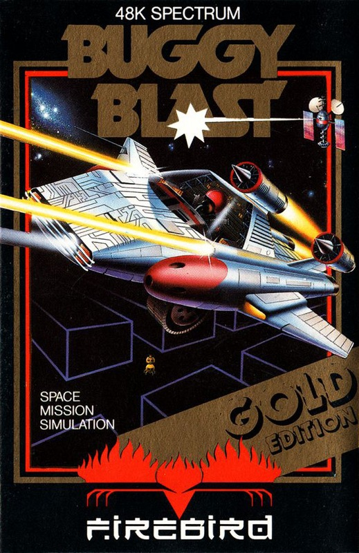
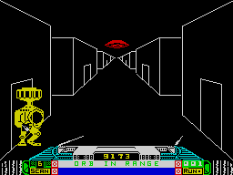
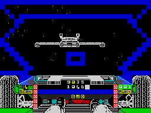

Buggy Blast


{kind=link}

| Publisher: | Firebird |
| Price: | £5.95 |
| Year: | 1985 |
| Source: | CRASH, Issue 13 |

Buggy Blast is the first of Firebird’s Gold Edition games, which explains the higher price. Buggy Blast is a 3D space shoot em up of some complexity. The story goes like this: For over three centuries the planet Endra has been inhabited by the Lurgons. The key to their power is held in the Central Lurgon Corridor (Sector 8 of the game). A pilot skilled enough to gain entry to this sector and destroy 20 Lurgons will cause a power reversal that will consume the whole complex. You start, seated in your space buggy, in the impressively complex launch tube of the Mother Ship. A vidscreen lowers before your canopy and informs you of the imminent launch and the sector of corridor you will be entering. The scoring system only allows you access to the sector for which you are currently fitted and all launch procedures are fully automatic. The launch fires you down the tube and out into space, then lowers you into the 3D corridor of sector 1. The fight is on!

Buggy instrumentation includes space scanners to warn of mine jammers (see below), onboard computer damage status reports, life mode indicator, Xion phaser indicator lights and an energy counter. Your enemy, the Lurgons, have developed from defective robots and are dedicated to the task of destroying all life forms. They have developed ten sophisticated weapons systems which you will encounter singly or severally depending on the sector being penetrated. These appear in increasing numbers in the narrow corridor, firing at you and wearing down your force field. The twin lasers are aimed with the left/right up/down keys, the buggy always travelling centrally down the corridor.
A wary eye must be kept on the energy level, for when it is depleted a return to the Mother Ship is essential. This takes you back into space whereupon the Mother Ship appears in the view screen which is equipped with a docking sight. This must be lined up on the central docking tube of the Mother Ship. It is at this point that the mine jammers try and destroy you. Successfully destroying a mine jammer will bring the Mother Ship back into range for auto-docking. At this point the score is updated which determines whether you will be returned to sector 1 or sent on to the next level. Naturally enough life gets harder with each level/sector!
CRITICISM

‘Buggy Blast is a Firebird Gold Edition, so I was expecting it to be a bit on the good side. The scenario is not very new, it’s the robots dedicated to organic life form destruction one. I wonder if they realise that they would have a pretty boring existence if the task was ever completed? Anyway, it won’t because us mega-Spectrum owners will zap em all first — that is if there was a Kempston facility. Reverting to the keyboard I found my hands a blur of activity, trying to survive in the corridors. The game was really exciting and fast moving with audio-visuals to match. I strongly recommend Buggy Blast to arcaders with hyper-fast reactions — no one else need apply here. Okay you Lurgons, just wait until I get back to the keys!’
‘It’s about time someone came out with a good, fast shoot em up — I do miss them. This game will provide hours of mindless blasting and zapping. This is what I call fun! I really must say that this game is so highly polished in 3D graphic detail. All the enemy are drawn solidly and smoothly get larger as they move towards you. Most shoot em up games don’t have a very strong objective to them, but this one has a definite objective, a goal to go towards, it doesn’t just get harder and harder and harder like Space Invaders used to, although I’m not saying it’s easy by any standards. Explosions must be some of the best around, very zappy, very neat. Sound also is incredibly good for a one channel sound chip, and not a very capable one at that — excellent. It must be among the noisiest shoot em up games ever produced. I have no quibbles with this game whatsoever, and I’m sure it will satisfy anyone who loves pure shoot em up type games. Well worth the money.’
‘Buggy Blast is a visually elegant game with its movie-like opening and between sequences. There really is quite a lot to see and do, as the Lurgon enemy get more ferocious. The launch sequence graphics are very impressive and there is excellent sound to go with them. By not having the buggy move about in the corridors, you are left free to concentrate on firing, which is just as well! A neat touch is that your twin lasers are actually visible, and you can see them swinging about to aim on the enemy. Firebird have ensured a long play for this game by providing numerous types of enemy and several visual effects that some of the weapons produce. Throughout, the graphics and the sound are of a very high standard and all add to an addictive and very playable game.’
COMMENTS
| Control keys: | Q/W left/right O/M up/down, X for Xion phasers, P for lasers (or the cursor keys) |
| Joystick: | Protek, AGF |
| Keyboard play: | Well positioned and responsive |
| Use of colour: | Very good |
| Graphics: | Very good 3D, detailed, large and fast |
| Sound: | Excellent and varied |
| Skill levels: | 8 sectors |
| Lives: | 1 with percentage of damage |
| Screens: | 8 sectors and several in-between screens |
| General rating: | Highly addictive, playable and an excellent shoot em up. |
| Use of computer: | 84% |
| Graphics: | 94% |
| Playability: | 91% |
| Getting started: | 93% |
| Addictive qualities: | 94% |
| Value for money: | 92% |
| Overall: | 91% |